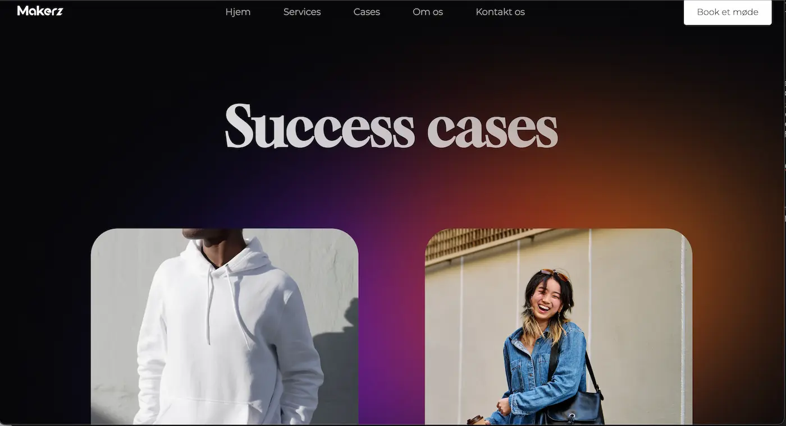
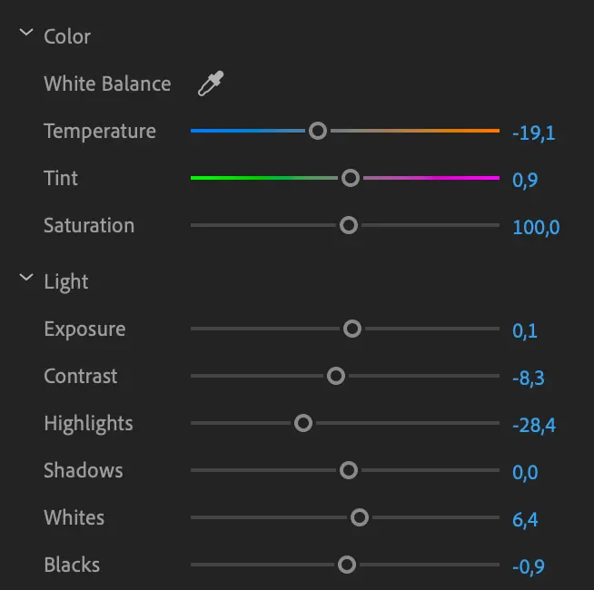
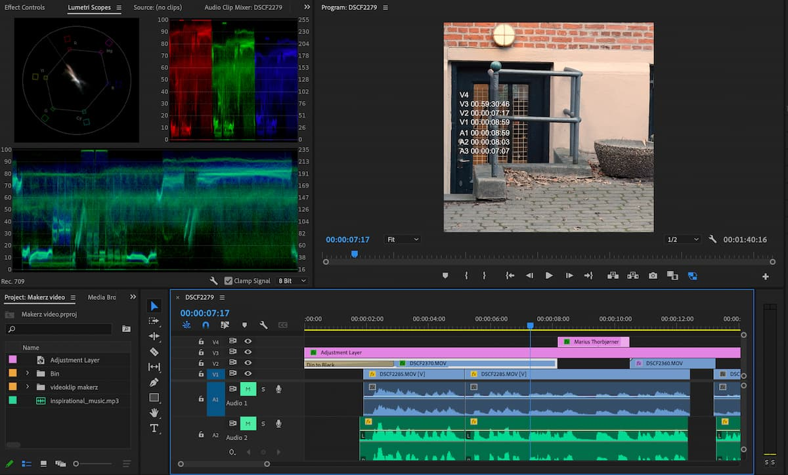

Tema 5: Grundlæggende Indhold
I Tema 5: Grundlæggende indhold blev vi introduceret til redigeringsværktøjer som Audition og Premiere Pro. Temaopgavernes primære fokus var at producere og redigere indhold til etablerede virksomheder ved hjælp af disse værktøjer. I den endelige temaopgave blev jeg, sammen med min gruppe, tildelt opgaven at redesigne en eksisterende virksomheds hjemmeside med henblik på at modernisere den. Vi blev præsenteret for forskellige tests, herunder BERT-testen, der fungerer som et værktøj til at analysere problemstillinger på den eksisterende hjemmeside for virksomheden samt identificere eventuelle udfordringer i vores eget redesign af hjemmesiden.
Link til RedesignVideosite - Pilotvideo
I opgaven Videosite blev jeg kompetent i følgende værktøjer i Premier pro: Color Correction og Color Grading, Usynlig klipning, transition effekter og Lower Thirds. Disse kompetencer tog jeg med mig videre til Temaopgaven Virksomhedssite.

Virksomhedssite
I Temaopgaven var min designeret rolle video- og billedredigering. Desuden delte vi opgaven op sådan at vi hver stod for en side hver, hvoraf jeg fik siden ”CASES”. På denne side har jeg brugt de kompetencer jeg har lært i de tidligere temaer, såsom Grid og CSS styling.
Videoredigering

